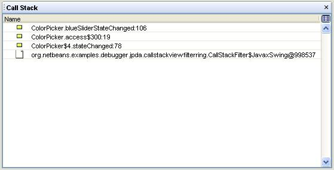
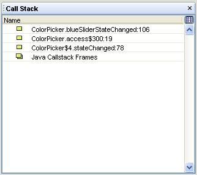

JPDA Debugger SPIs defines support for Smart Stepping, Variables Filtering
and filtering of all Debugger Views.
Smart Stepping Support
Interfaces involved:
- {@link org.netbeans.api.debugger.jpda.SmartSteppingFilter} :
Defines list of class exclusion filters to be used to filter stepping
in debugged session.
- {@link org.netbeans.spi.debugger.jpda.SmartSteppingCallback} :
Listens on stepping engine and defines classes / places the debugger
can stop in.
- {@link org.netbeans.api.debugger.jpda.JPDAThread} : Represents
context for SmartSteppingCallback (class name, method name, line
number, ...).
Functionality supported:
Set of SmartSteppingCallback installed
to JPDA Debugger defines scope for Step Into / Over / Out Actions. When
user press some Step action, debugging is resumed. And when debugger
stops on some new place (defined by class name and line number) set of
SSListeners is asked if debugging should stop on this place or not (see
{@link org.netbeans.spi.debugger.jpda.SmartSteppingCallback#stopHere}
method). But this step-by-step method is slow. That is why the second,
more powerfull method is here. SSListener can define some set of class
exclusion patterns (like java.*, com.abba.Loader, ...). This set of
exclusion patterns managed by {@link
org.netbeans.api.debugger.jpda.SmartSteppingFilter} class defines scope
for Step Actions in more powerfull way.
JPDA Debugger installs one default SmartSteppingCallback. It excludes
all sourceless classes (packages). So, if user does not have mounted
sources for Java default libraries, this SSListener adds patterns like:
java.*, javax.* and com.sun.*.
How to implement some new Smart Stepping Listener:
Lets say we have some xxx module which
generates some code to standard Java classes. The generated code is
always in some methods, which name is prefixed with "xxx" like:
class MyClass {
private void xxxBigBusinessMethod () {
// generated code is here!
}
public void userMethod () {
// user code is here...
}
}
And we would like to change standard
JPDA debugger to not stop in generated methods.
In this case we should implement {@link
org.netbeans.spi.debugger.jpda.SmartSteppingCallback}:
public class SmartSteppingCallbackImpl extends SmartSteppingCallback {
public void initFilter (SmartSteppingFilter f) {}
public boolean stopHere (ContextProvider lookupProvider, JPDAThread thread, SmartSteppingFilter f) {
String methodName = thread.getMethodName ();
return !methodName.startsWith ("xxx"); // if method starts with "xxx" DO NOT stop there!
}
}
To register this implementation, add following annotation before the class declaration:
@SmartSteppingCallback.Registration(path="netbeans-JPDASession")
Or register the full implementation class name (packagename.SmartSteppingCallbackImpl) into the file named:
META-INF\debugger\netbeans-JPDASession\org.netbeans.spi.debugger.jpda.SmartSteppingCallback
Variables Filtering
Support
Filtering of Debugger
Views
Content of all Debugger Views (like
Breakpoints View, Threads View, ...) can be changed by
viewmodel.*Filters. Folowing example shows how to filter Callstack
View. We would hide all frames associated with some "java.*" packages.
Some dummy node will be displayed in the place of this frames.
Step 1.
We should implement
org.netbeans.spi.viewmodel.TreeModelFilter first:
public class CallStackFilter implements TreeModelFilter {
public Object[] getChildren (TreeModel original, Object parent, int from, int to) {
Object[] originalCh = original.getChildren (parent, from, to);
int i, k = originalCh.length;
ArrayList newCh = new ArrayList ();
boolean in = false;
for (i = 0; i < k; i++) {
if (! (originalCh [i] instanceof CallStackFrame)) {
newCh.add (originalCh [i]);
continue;
}
CallStackFrame f = (CallStackFrame) originalCh [i];
String className = f.getClassName ();
if (className.startsWith ("java")) {
if (!in) {
newCh.add (new JavaxSwing ());
in = true;
}
} else {
in = false;
newCh.add (f);
}
}
return newCh.toArray ();
}
public Object getRoot (TreeModel original) {
return original.getRoot ();
}
public boolean isLeaf (TreeModel original, Object node)
throws UnknownTypeException {
if (node instanceof JavaxSwing) return true;
return original.isLeaf (node);
}
private static class JavaFrames {}
}
And register it in file:
Meta-inf\debugger\netbeans-JPDASession\CallStackView\org.netbeans.spi.viewmodel.TreeModelFilter
As you can see on the picture this Filter replaces some original frames
by some dummy node.

Step 2.
We should provide NodeModel (at least)
for our new node type (JavaFrames) now.
public class CallStackFilter implements NodeModel {
public String getDisplayName (Object node) throws UnknownTypeException {
if (node instanceof JavaFrames)
return "Java Callstack Frames";
throw new UnknownTypeException (node);
}
public String getIconBase (Object node) throws UnknownTypeException {
if (node instanceof JavaFrames)
return "org/netbeans/examples/debugger/jpda/callstackviewfilterring/NonCurrentFrame";
throw new UnknownTypeException (node);
}
public String getShortDescription (Object node) throws UnknownTypeException {
if (node instanceof JavaFrames)
return "Unimportant hidden callstack frames";
throw new UnknownTypeException (node);
}
}
And registration:
Meta-inf\debugger\netbeans-JPDASession\CallStackView\org.netbeans.spi.viewmodel.TreeModelFilter
